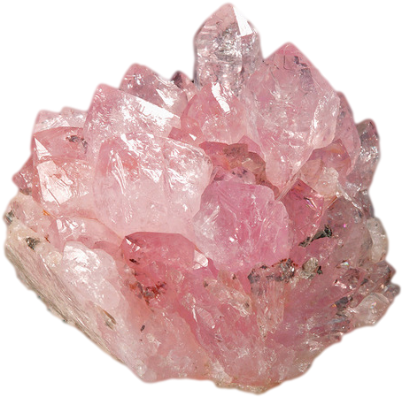

Some characteristics about Rose Quartz
Translucent, usually turbid, very coarse-grained variety of the silica mineral quartz found in pegmatites. Rose quartz is valued for its pale- to rich-pink colour, which may be due to titanium. It has been carved since early times and has been faceted to provide gems of good brilliance. Its milky aspect is attributed to tiny needlelike inclusions of rutile, which, when oriented, give the polished stone an asterism (optical phenomenon of a star-shaped figure) like that found in sapphire, but not as sharp or intense. Rose quartz occurs in Brazil, Sweden, Namibia, California, and Maine. Its properties are those of quartz.
The use of rose quartz is said to date back as far as 7,000 B.C. It’s also been claimed that Egyptian and Roman women used rose quartz face masks to clear their complexions and prevent wrinkles. Today rose quartz is often used as jewelry, for meditation, or as decoration in homes or office spaces.

& its magical properties
“Rose quartz is a powerful healing crystal,” says crystal healer and reiki master Keith Birch, owner of KSC Crystals. “Its soft, gentle, almost pastel pale pink coloring is a good indication of its most commonly known property: that of pure love. It’s a stone of both giving and receiving love.” As Birch says, rose quartz is believed by many to encourage the qualities of love. However, it’s important to note that there’s a lack of research to support these claims about crystals. In fact, there’s very little evidence to support the benefits of crystals at all.
Use in healing
The rose quartz is believed to embody powerful healing qualities that may be beneficial both for physical and emotional health.
It’s said by some that rose quartz can:
- Heal relationship problems
- Promote mutual understanding
- Inspire an attitude of compassion and kindness
It’s also believed it can boost feelings of:
- Peace
- Calm
- Self-love
“Predominantly, rose quartz is a crystal of unconditional love that brings deep healing to the heart by opening the heart chakra,” Birch explains. “Once achieved, a deeper state of calmness, serenity, and peace is reached, which ultimately results in complete relaxation, encouraging the feelings of happiness and contentment.”